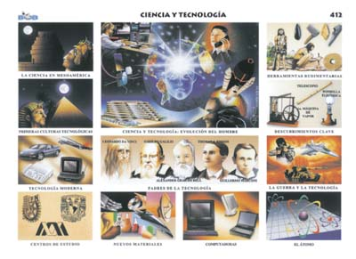

Busca apoyar a la Dirección de Tecnologías y Sistemas de la Información o a quien haga sus veces con lineamientos y estándares orientados a la definición y diseño de la Arquitectura de la infraestructura tecnológica que se requiere para soportar los Sistemas de Información y el portafolio de servicios.
Más Información